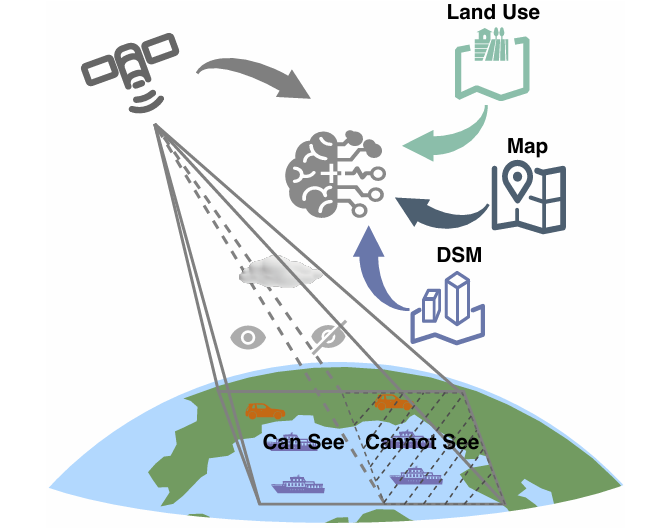

武汉大学 · 人工智能与机器视觉研究所
Zhihong Tan
谈治宏
我在武汉大学读硕士，师从陈震中教授，研究 Web GUI Agent 与多模态视觉理解。在微软亚洲研究院实习期间，我为智能体构建网页交互训练数据，也开发了从资料生成幻灯片的工具。
代表研究 Selected research

更多研究 CLIP-RS、AVQLMM、LongCaptioning
- CLIP-RS · IEEE TGRS 2025 我负责在 1,000 万对遥感图文样本上预训练 CLIP-RS，用于无监督语义分割质量评价。模型权重
- AVQLMM 我结合音频、视频与文本来评估视频通话质量，并参与 ITU-T P.UXV 标准研发。
- LongCaptioning 我负责构建 LongCaption-Bench，评测多模态模型生成长视频描述的能力。
研究实习 Experience
微软亚洲研究院
2026.01 — 2026.09 · 研究实习生 · 导师 Qi Dai
Web GUI Agent 训练数据引擎
我负责网站探索、任务合成、分布式轨迹采集和质检，交付了约 4.3 万条经验证的网页交互轨迹，并在 Online-Mind2Web、WebArena 和 WebTailBench 上评测模型。
DeepV 幻灯片生成 Agent
我开发了从主题或参考资料生成 PPTX 的核心工作流。用户可以先调整大纲，再圈选页面区域修改图文，也可以跨页批量编辑，按选定版本导出。
教育与获奖 Background
- 2024 — 2027
- 武汉大学 · 硕士研究生
遥感信息与工程学院，预计 2027 年 6 月毕业 - 2020 — 2024
- 武汉大学 · 学士
遥感信息与工程学院 - 2026
- QoMEX 低光照增强图像质量评价挑战赛 · 第一名
团队核心成员